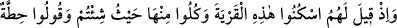
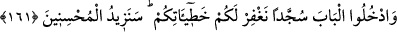

temiz ve lezzetlilerinden “yeyin.” dedik.
Farsça tefsirde şöyle denilmektedir: “Sırf ilâhî inâyetimden olarak o pak ve temiz
nesneleri size rızık eyledim. Yani rızık olarak ne ulaşırsa onu yiyin. Kendiniz için
biriktirip saklamayın.” demektir. İmdi onlar, muhâlefet ettiler; biriktirip sakladılar.
Biriktirdiklerinin hepsi taaffün etti, koktu ve bozuldu.”
“Ama onlar bize zulmetmediler,” yani bu büyük nimetlere karşı nankörlük ederek
kendilerine haksızlık ettiler. Yoksa böyle yaparak bize zulmetmediler. “fakat kendi
kendilerine zulmediyorlardı.” Çünkü yaptıklarının zararı başkasına ulaşmaz.
Haddâdî der ki: “Onlar, Allah’ın azabını hak etmek, dünyada külfetsiz ve meşakkatsiz
olarak kendilerine ulaşan, ahirette de hesabı ve yorgunluğu olmayan bir rızkın
kesilmesine sebep olarak kendilerine zarar veriyorlardı.
161. Onlara denildi ki: Şu şehirde (Kudüs’te) yerleşin, ondan (nimetlerinden)
dilediğiniz gibi yeyin, “bağışlanmak istiyoruz” deyin ve kapıdan eğilerek girin ki
hatalarınızı bağışlayalım. İyilik yapanlara ileride ihsanımızı daha da artıracağız.
“Onlara denildi ki: Yani, ey Muhammed, yahudilere atalarına şunların söylendiği
zamanı hatırlat: “Şu kentte oturun.” Burada zikredilen kentten maksad, ya Beytü’l-
Makdis veya Beytü’l-Makdis’in yanında bulunan ve zorbaların oturduğu yer olan
Eriha’dır. Orada Âd kavminden kalmış ve kendilerine Amâlika denilen bir kavim vardı.
Reisleri ise Avc b. Unk idi. “Orada dilediğiniz yerden” kimse size mani olmadan her
tarafından, yiyeceklerinden ve meyvelerinden “yeyin,” Allah’a niyâz edip “Allah’ım,
günahlarımızı “affet” deyin ve kapıdan” kentin kapısından girerken “başınızı eğerek”
yani boynu bükük mütevazi bir şekilde veya Tîh çölünden çıkarılmalarına bir şükür
olarak secdeye kapanarak “girin”
“Hıtta ” (affet), bir şeyi yukarıdan alıp aşağı koymak demektir. Burada “bağışlama ve
günahları affetme” mânâsında kullanılmıştır.
Eğer ayette geçen kentten maksad Eriha ise rivayete göre oraya girmeleri, Mûsâ (a.s.)
ve yanında kalan İsrâiloğulları ile veya diğer rivayete göre onların çocukları ile bu
kenti fethettiği zaman olmuştur. Nitekim bu konu ile ilgili açıklama Maide suresinde
geçmişti.
Eğer bu kentten maksad Beytü’l-Makdis ise rivayet olunduğuna göre İsrâiloğulları,
Mûsâ (a.s.) hayattayken oraya girememişlerdir.
Ayette geçen “kapı”dan maksadın içinde namaz kıldıkları üstü kubbeli yerin kapısı
olduğu söylenmiştir. (el-İrşâd’da böyle geçmektedir.)
“ki hatâlarınızı” önceden yaptığınız günahları istiğfar ettiğiniz ve boyun eğdiğiniz